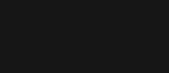

TORRE ◢
◣ AGBAR

☰
Ubicada en la Avenida Diagonal con la Calle Badajoz, la Torre Agbar es uno de los rascacielos más importantes
y representativos de Barcelona
Se trata de un vistoso edificio ubicado en el nuevo distrito tecnológico de Barcelona que ha pasado
a formar parte del paisaje urbano de la ciudad, especialmente durante la noche, cuando su fachada se llena de luces y color.
El curioso edificio, inaugurado en 2005, cuenta con 34 pisos y un total de 145 metros de altura,
lo que le convierte en uno de los edificios más altos de la ciudad.
Con una característica forma de bala, el edificio está compuesto por 25.000 metros cúbicos de hormigón y 250.000 kilos de acero.
La torre cuenta con más de 50.000 metros cuadrados, de los cuales la mayor parte funcionan como oficinas.
La característica más representativa de la Torre Agbar es su iluminación nocturna. El edificio cuenta
con más de 4.500 dispositivos luminosos que proyectan atractivas imágenes a lo largo de toda la fachada.
A pesar de que tras su construcción la torre fue motivo de una gran controversia, en la actualidad se ha convertido en uno
de los iconos turísticos y culturales de Barcelona y los tours que recorren la ciudad suelen incluirla entre sus visitas.